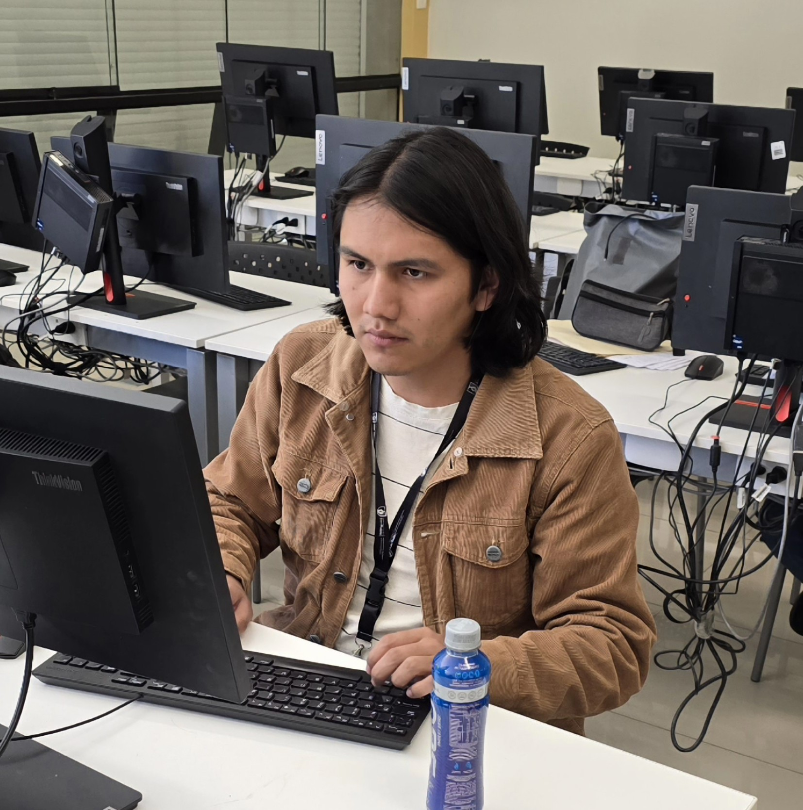

I am a student...
and more specifically, I like algorithms, graph theory, and exploring the frontiers of computer science.
I love studying new topics across all fields of science. In particularly enjoy problems involving graph theory. Outside of tech, I immerse myself in music.
About Me
I am a Computer Science student at Universidad Nacional de San Antonio Abad del Cusco (UNSAAC), passionate about algorithms,
graph theory, and scientific learning. I enjoy understanding complex systems and exploring
new ideas across computing and science.
I've represented my university in the ICPC Latin America Regional Contests (2022–2024),
with official records under my ICPC ID.
I also attended the Training Camp Argentina in 2024 and 2025, training with top
competitive programmers in the region.
I contribute to student communities as former leader of the
UNSAAC Competitive Programming Group,
where I taught algorithms and data structures. I’m also part of the ACM Cusco Student Chapter and OmegaUp.
Outside of technology, I am a science enthusiast and a music lover. I enjoy studying different scientific fields, playing instruments, and discovering new sounds.
Achievements
-
NASA Space Apps Challenge Cusco Winner (2025) —
Developed the educational game FarmGuardians using NASA Earth data.
FarmGuardians
-
IEEEXtreme 18.0 — Ranked Top 5 in Peru and
Top 150 worldwide under the team name "Wozmit".
View ranking
-
CUSCONTEST Champion (2023 & 2024) —
Winner of the university’s programming contest, most notably under the team name
“Watashi WA choudo nani ga”.
Scoreboard
-
ELECON Programming Contest Winner (2023) —
First place in the ELECON international congress programming competition.
-
ENEISOFT Programming Contest (2024) —
Achieved Top 7 in Peru.
-
ICPC Regional Contest Participant (2022–2024) —
Represented UNSAAC in multiple official ICPC regional events.
ICPC Profile
-
Training Camp Argentina — Attended in both 2024 (Rosario) and 2025 (Santa Fe).
Experience & Education
Bachelor in Computer Science
National University of San Antonio Abad of Cusco, Cusco, Peru
2020 - 2025
Web Development Intern
Tikaymi, Cusco, Peru
May 2025 - Oct 2025
Document Management System — Django, SQL, Vue.js, Docker, RESTful APIs. Developed a system for managing documents in a tourism company, contributing to both backend and frontend development within an agile team.
Student Ambassador
IEEE Cusco, Region 9
2024 - 2025
Hosted the IEEEXtreme 10.8 at Cusco, promoted programming competitions, managed courses, and organized workshops for student participation.
Student Lead
Google Peru Student Summit, Cusco
September 2024
Collaborated with OmegaUp and Google staff to deliver a successful summit for 150 students, managing logistics and programmatic tasks.
Projects
Estimation of Optimal Hardness in Metal Alloys
UNSAAC, Cusco, Peru
February 2024
Developed a model combining multilinear regression with genetic algorithms to optimize alloy hardness. Improved hardness by 15%, achieving 0.02 MSE using Python (Pandas, Numpy, Scikit-learn).
Python
Pandas
Numpy
Scikit-learn
Genetic Algorithms
FarmGuardians Educational Video Game
NASA Space Apps Challenge, Cusco, Peru
2024 - 2025
Winner of NASA Space Apps Challenge 2024 & 2025. Developed an educational game transforming NASA Earth observation data (NDVI, temperature, soil moisture) into interactive agricultural missions. Contributed as Data Scientist, implementing data pipelines and game logic.
[Repo] |
[Demo]
Unity
VR
C#
NASA APIs
Game Design
Competitive Programming Repository
Personal GitHub
Ongoing
Repository with my competitive programming solutions, problem-solving techniques, and practice code for contests like ICPC, IEEEXtreme, and CUSCONTEST.
[Repo]
C++
Python
Algorithms
Data Structures
Hobbies & Interests
When I'm not coding or solving algorithmic puzzles, I enjoy activities that help me stay creative, balanced, and continuously learning.
-
Reading: Technical papers, CS books, and science fiction novels. Helps me discover new perspectives and deepen understanding of complex topics.
-
Music & Guitar: Playing guitar and exploring different music genres, especially Andean music. A way to unwind and express creativity.
-
Puzzle Solving: Rubik's cubes and other mechanical puzzles. Complements my interest in algorithms by finding patterns and optimizing solutions.
-
Films & Cinema: Watching movies to enjoy storytelling, character development, and cinematography. A creative source of inspiration outside of coding.
-
Video Games: Strategy, puzzle, and adventure games. Fascinating both as entertainment and as studies in game design, mechanics, and system architecture.
Contact
Always happy to connect with fellow programmers, researchers, or anyone passionate about algorithms and competitive programming. Feel free to reach out!